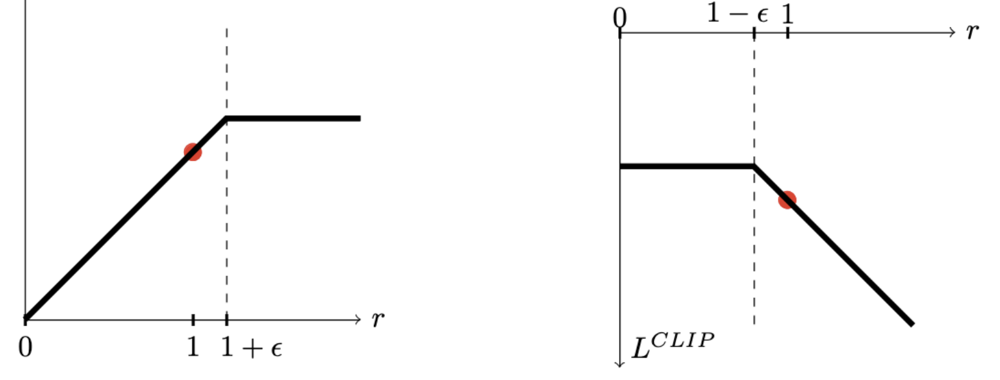

Policy Gradients
Let $\tau$ denote a state-action trajectory $\tau = (s_0, a_0, s_1, a_1, \ldots, s_H, a_H)$. We denote the reward of the trajectory as $R(\tau) = \sum_{t=0}^{H} R(s_t, a_t)$. The expected utitlity given a policy $\pi_\theta$ is:
$$U(\theta) = E [\sum_{t=0}^{H} R(s_t, a_t) \mid \pi_\theta] = \sum_{\tau} P(\tau \mid \pi_\theta) R(\tau)$$
Our goal is to find the policy $\pi_\theta$ that maximizes the expected utility $U(\theta)$:
$$\max_{\theta} U(\theta) = \max_{\theta} \sum_{\tau} P(\tau \mid \pi_\theta) R(\tau)$$
Taking the gradient of the expected utility with respect to the policy parameters $\theta$, we get:
\[
\begin{align*}
\nabla_{\theta} U(\theta)
&= \nabla_{\theta} \sum_{\tau} P(\tau \mid \pi_\theta) R(\tau) \\
&= \sum_{\tau} \nabla_{\theta} P(\tau \mid \pi_\theta) R(\tau) \\
&= \sum_{\tau} \frac{P(\tau \mid \pi_\theta)}{P(\tau \mid \pi_\theta)} \nabla_{\theta} P(\tau \mid \pi_\theta) R(\tau) \\
&= \sum_{\tau} P(\tau \mid \pi_\theta) \frac{\nabla_{\theta} P(\tau \mid \pi_\theta)}{P(\tau \mid \pi_\theta)} R(\tau) \\
&= \sum_{\tau} P(\tau \mid \pi_\theta) \nabla_{\theta} \log P(\tau \mid \pi_\theta) R(\tau) \\
&= E_{\tau \sim P(\tau \mid \pi_\theta)}\left[ \nabla_{\theta} \log P(\tau \mid \pi_\theta) R(\tau) \right]
\end{align*}
\]
We can estimate the gradient by sampling trajectories from the policy:
$$\nabla_{\theta} U(\theta) \approx \frac{1}{N} \sum_{i=1}^{N} \nabla_{\theta} \log P(\tau_i \mid \pi_\theta) R(\tau_i)$$
We can do temporal decomposition on $\nabla_{\theta} \log P(\tau \mid \pi_\theta)$:
\[
\begin{align*}
\nabla_{\theta} \log P(\tau \mid \pi_\theta)
&= \nabla_{\theta} \log [ \prod_{t=0}^{H} P(s_{t+1} \mid s_t, a_t) \pi_\theta(a_t \mid s_t) ] \\
&= \nabla_{\theta} [\sum_{t=0}^{H} \log P(s_{t+1} \mid s_t, a_t) + \sum_{t=0}^{H} \log \pi_\theta(a_t \mid s_t) ]\\
&= \nabla_{\theta} \sum_{t=0}^{H} \log \pi_\theta(a_t \mid s_t) \\
&= \sum_{t=0}^{H} \nabla_{\theta} \log \pi_\theta(a_t \mid s_t) \\
\end{align*}
\]
The key insight here is that the environment dynamics is independent of the policy, and so its gradient will be zero and can be factored out.
Next we will consider baseline subtraction to reduce the variance of the gradient estimate. Suppose we have a baseline $b$:
$$\nabla U(\theta) \approx \hat{g} = \frac{1}{N} \sum_{i=1}^{N} \nabla_{\theta} \log P(\tau_i \mid \pi_\theta) (R(\tau_i) - b)$$
We will first show that this is still an unbiased estimate of the gradient:
\[
\begin{align*}
E[ \nabla_{\theta} \log P(\tau \mid \pi_\theta) b ]
&= \sum_{\tau} P(\tau \mid \pi_\theta) \nabla_{\theta} \log P(\tau \mid \pi_\theta) b \\
&= \sum_{\tau} P(\tau \mid \pi_\theta) \frac{\nabla_{\theta} P(\tau \mid \pi_\theta)}{P(\tau \mid \pi_\theta)} b \\
&= \sum_{\tau} \nabla_{\theta} P(\tau \mid \pi_\theta) b \\
&= b \nabla_{\theta} (\sum_{\tau} P(\tau \mid \pi_\theta)) \\
&= b \nabla_{\theta} (1) \\
&= 0 \\
\end{align*}
\]
This holds as long as $b$ does not depend on $\tau$. Another trick is that we can do temporal decomposition on the reward too:
\[
\begin{align*}
\hat{g} &= \frac{1}{N} \sum_{i=1}^{N} \nabla_{\theta} \log P(\tau_i \mid \pi_\theta) (R(\tau_i) - b) \\
&= \frac{1}{N} \sum_{i=1}^{N} (\sum_{t=0}^{H-1} \nabla_{\theta} \log \pi_\theta(a_t^i \mid s_t^i)) (\sum_{t=0}^{H-1} R(s_t^i, a_t^i) - b) \\
&= \frac{1}{N} \sum_{i=1}^{N} (\sum_{t=0}^{H-1} \nabla_{\theta} \log \pi_\theta(a_t^i \mid s_t^i)) ((\sum_{k=0}^{t-1} R(s_k^i, a_k^i)) + (\sum_{k=t}^{H-1} R(s_k^i, a_k^i)) - b) \\
\end{align*}
\]
The past rewards don't depend on the currect action $a_t$ we can drop that part without changing the expectation, and obtain our unbiased lower-variance estimator:
$$\hat{g} = \frac{1}{N} \sum_{i=1}^{N} (\sum_{t=0}^{H-1} \nabla_{\theta} \log \pi_\theta(a_t^i \mid s_t^i)) (\sum_{k=t}^{H-1} R(s_k^i, a_k^i) - b(s_t^i))$$
where the baseline $b$ can be dependent on the state $s_t$ (but doesn't have to). In fact, there are a couple common choices for $b$. The first choice to use the average reward across all trajectories:
$$b = \frac{1}{N} \sum_{i=1}^{N} R(\tau_i)$$
The second choice to use the state-dependent expected return (i.e., the value function):
$$b(s_t) = E [R_t + R_{t+1} + \ldots + R_{H-1} \mid s_t] = V^\pi(s_t)$$
There are two ways to estimate the value function, either through Monte Carlo or Bootstrapping.
- Initialize $V_{\phi_0}^{\pi}$
- Collect trajectories $\tau_1, \ldots, \tau_N$
- Regress against empirical returns: $$\phi_{i+1} \leftarrow \arg \min_{\phi} \frac{1}{N} \sum_{i=1}^{N} \sum_{t=0}^{H-1} (V_{\phi}^{\pi}(s_t^i) - (\sum_{k=t}^{H-1} R(s_k^i, a_k^i)))^2$$
- Initialize $V_{\phi_0}^{\pi}$
- Collect data $\{s, a, s', r(s, a, s')\}$
- V-iteration: $$\phi_{i+1} \leftarrow \arg \min_{\phi} \sum_{(s, a, s', r)} (r + \gamma V_{\phi_i}^{\pi}(s') - V_{\phi}^{\pi}(s))^2 + \lambda \| \phi - \phi_i \|_2^2$$
- Initialize policy parameters $\theta$ and baseline $b$
- For iteration = $1, 2, \ldots, $ do:
- Collect trajectories by executing the current policy
- At each timestep in each trajectory, compute:
- $R_t = \sum_{k=t}^{H-1} \gamma^{k-t} R(s_k, a_k)$
- $\hat{A}_t = R_t - b(s_t)$
- Re-fit the baseline by minimizing $\sum_{i} \sum_{t} \| b(s_t) - R_t^i \|^2$ over all trajectories and timesteps in the batch (Monte Carlo Estimation)
- Update the policy using the policy gradient estimate:
- $\hat{g} = \frac{1}{N} \sum_{i=1}^{N} \sum_{t=0}^{H-1} \nabla_{\theta} \log \pi_\theta(a_t^i \mid s_t^i) \hat{A}_t^i$
- $\theta \leftarrow \theta + \alpha \hat{g} \quad$ (plug $\hat{g}$ into SGD or Adam)
Advantage Estimation
Looking back at our policy gradient estimate:
$$\hat{g} = \frac{1}{N} \sum_{i=1}^{N} \sum_{t=0}^{H-1} \nabla_{\theta} \log \pi_\theta(a_t^i \mid s_t^i) (\sum_{k=t}^{H-1} R(s_k^i, a_k^i) - V^\pi(s_t^i))$$
The term $\sum_{k=t}^{H-1} R(s_k^i, a_k^i)$ is the single-sample estimate of the Q-value: $Q^\pi(s_t^i, a_t^i)$ (ignoring the discount factors). This is the pure Monte Carlo way of estimating the Q-value. It is unbiased but has high variance, and requires waiting until the end of the trajectory. Alternatively, we can also use Bootstrapping to estimate the Q-value, and let's write it out incorporating the discount factor $\gamma$ too:
\begin{align*}
Q^{\pi}(s, a)
&= E[r_0 + \gamma r_1 + \gamma^2 r_2 + \ldots \mid s_0=s, a_0=a] \quad (\text{Monte Carlo}) \\
&= E[r_0 + \gamma V^\pi(s_1) \mid s_0=s, a_0=a] \\
&= E[r_0 + \gamma r_1 + \gamma^2 V^\pi(s_2) \mid s_0=s, a_0=a] \\
&= E[r_0 + \gamma r_1 + \gamma^2 r_2 + \gamma^3 V^\pi(s_3) \mid s_0=s, a_0=a] \\
&= \ldots \\
\end{align*}
If we use the 1-step bootstrap estimator: $\hat{Q}(s_t, a_t) = r_t + \gamma V_{\phi}(s_{t+1})$, then our advantage estimate becomes: $\hat{A}(s_t, a_t) = \hat{Q}(s_t, a_t) - V_{\phi}(s_t)$. Plug this into the policy gradient algorithm, we get the following algorithm known as Actor-Critic:
- Initialize policy parameters $\theta$ (actor) and value parameters $\phi$ (critic)
- For iteration = $1, 2, \ldots,$ do:
- Collect trajectories by executing the current policy $\pi_\theta$
- For each timestep in each trajectory, compute the TD target and TD error:
- $y_t = r_t + \gamma V_\phi(s_{t+1})$
- $\delta_t = y_t - V_\phi(s_t) = r_t + \gamma V_\phi(s_{t+1}) - V_\phi(s_t)$
- Update the critic by regressing onto the TD target (in practice, take a gradient step on the loss):
- $\phi \leftarrow \arg \min_{\phi} \sum_i \sum_t \left( V_\phi(s_t^i) - \left(r_t^i + \gamma V_{\phi_{\text{old}}}(s_{t+1}^i)\right) \right)^2$
- Update the actor using the policy gradient estimate with the critic's TD error:
- $\hat{g} = \frac{1}{N} \sum_{i=1}^{N} \sum_{t=0}^{H-1} \nabla_{\theta} \log \pi_\theta(a_t^i \mid s_t^i)\, \delta_t^i$
- $\theta \leftarrow \theta + \alpha \hat{g} \quad$ (plug $\hat{g}$ into SGD or Adam)
TRPO & PPO
Let's first introduce importance sampling. Suppose we want to know the expected outcome of a distribution $p(x)$, but we can only sample from a different distribution $q(x)$, we can use importance sampling to estimate the expected outcome of $p(x)$ by:
$$E_{x \sim p(x)}[f(x)] = E_{x \sim q(x)}[\frac{p(x)}{q(x)} f(x) ]$$
where the term $\frac{p(x)}{q(x)}$ is the importance weight. Now let's denote the policy that we use to collect data as $\pi_{\theta_{\text{old}}}$ and the policy that we want to update as $\pi_\theta$ (before any gradient updates, these two are the same). We sampled trajectories $\tau$ from the old policy and obtained the returns on them, and we want to use this data to estimate the expected return of the new policy. We can do so via importance sampling:
$$U(\theta) = E_{\tau \sim \pi_{\theta_{\text{old}}}}[\frac{P(\tau \mid \pi_\theta)}{P(\tau \mid \pi_{\theta_{\text{old}}})} R(\tau)]$$
If we take its gradient:
\begin{align*}
\nabla_{\theta} U(\theta) &= E_{\tau \sim \pi_{\theta_{\text{old}}}}[\frac{\nabla_{\theta} P(\tau \mid \pi_\theta)}{P(\tau \mid \pi_{\theta_{\text{old}}})} R(\tau)] \\
\nabla_{\theta} U(\theta) \mid_{\theta = \theta_{\text{old}}} &= E_{\tau \sim \pi_{\theta_{\text{old}}}}[\frac{\nabla_{\theta} P(\tau \mid \pi_\theta) \mid_{\theta = \theta_{\text{old}}}}{P(\tau \mid \pi_{\theta_{\text{old}}})} R(\tau)] \\
&= E_{\tau \sim \pi_{\theta_{\text{old}}}} [\nabla_{\theta} \log P(\tau \mid \pi_\theta)\mid_{\theta = \theta_{\text{old}}} R(\tau)]\\
\end{align*}
This is telling us: when evaluated at $\theta_{\text{old}}$, the gradient of our objective $U(\theta)$ is exactly the policy gradient form we've seen before.
Now we introduce the surrogate objective of TRPO:
$$\max_{\pi} L(\pi) = E_{s,a \sim \pi_{\text{old}}} \left[\frac{\pi(a | s)}{\pi_{\text{old}}(a | s)} A^{\pi_{\text{old}}}(s,a)\right]$$
$$\text{s.t.} \;\; E_{\pi_{\text{old}}} [KL(\pi(\cdot|s) || \pi_{\text{old}}(\cdot | s) )] \leq \delta $$
This surrogate is a local first-order approximation of the true return $U(\theta)$ around the old policy (note that here we are reweighting the action choice at a given old-policy state, rather than reweighting the whole trajectories). The full TRPO algorithm looks like:
- For each iteration $k = 1, 2, \ldots$ do:
- Run policy for T timesteps or N trajectories
- Estimate advantage function at all timesteps
- Compute policy gradient $g$
- Use conjugate gradient (with Hessian-vector products) to compute $F^{-1}g$
- Do line search on surrogate loss and KL constraint
- End for
- Initialize policy parameters $\theta_0$, initial KL penalty $\beta_0$, target KL divergence $\delta$
- For each iteration $k = 0, 1, 2, \ldots$ do:
- Collect a set of (partial) trajectories $\mathcal{D_k}$ using current policy $\pi_{\theta_k}$
- Estimate advantages $\hat{A}_t^{\pi_{\theta_k}}$ using any advantage estimation algorithm
- Compute policy update: $$ \theta_{k+1} \leftarrow \arg \max_{\theta} \frac{1}{|\mathcal{D}|}\sum_t \left[ \frac{\pi_\theta(a_t|s_t)}{\pi_{\theta_k}(a_t|s_t)} \hat{A}_t - \beta_k \, \bar{D}_{\text{KL}}[\pi_{\theta}(\cdot|s_t) \,||\, \pi_{\theta_k}(\cdot|s_t)\big] \right] $$
- by taking K steps of minibatch SGD (via Adam)
- if $\bar{D}_{\text{KL}}(\theta_{k+1} || \theta_{k}) \geq 1.5 \delta$ then:
- $\beta_{k+1} = 2 \beta_k$
- else if $\bar{D}_{\text{KL}}(\theta_{k+1} || \theta_{k}) \leq \delta / 1.5$ then:
- $\beta_{k+1} = \beta_{k} / 2$
- End for

KL Estimator
References: